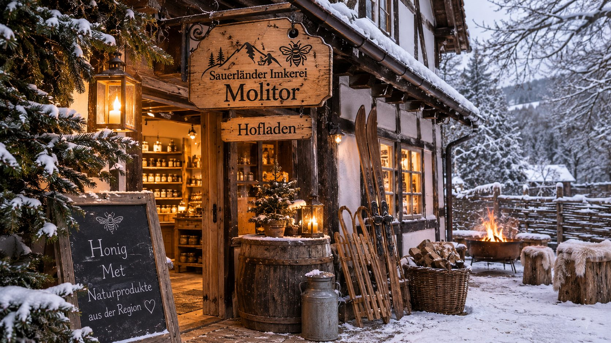
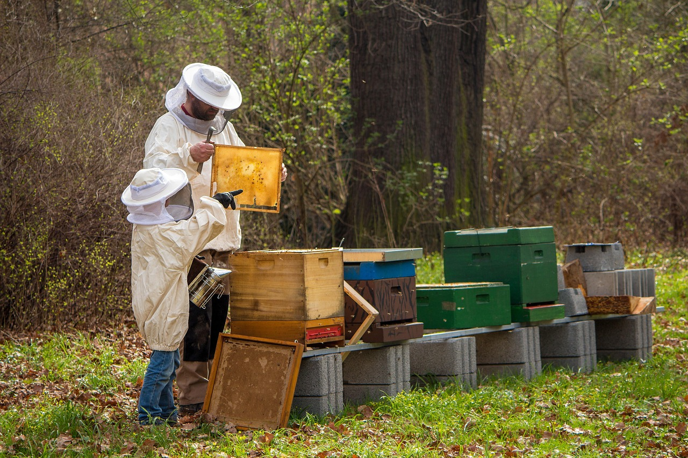
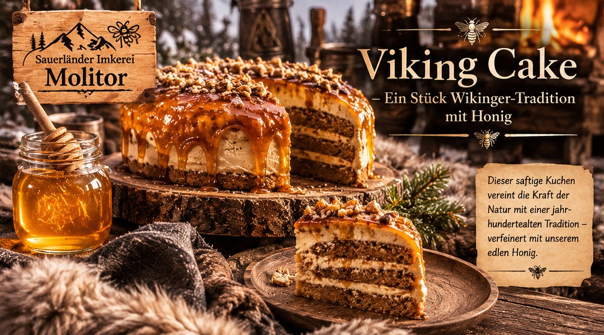

Set „Waldhonig & Met“
500 g Waldhonig und eine Flasche Imkerei Molitor Met (750 ml, 11 % vol)
Enthält Alkohol, Abgabe ab 18 Jahren
24,90 €
Jetzt bestellenbesuchen
Sie uns
im Hofladen

Täglich 10–18 Uhr geöffnet. Am Waltenberg 35, 59955 Winterberg – probieren Sie unsere Sorten direkt vor Ort.
Route & ÖffnungszeitenFertig gepackte Sets aus Honig, Met und Kerzen. Direkt im E-Shop bestellen oder im Hofladen mitnehmen. Bestellschluss: 21.12.2026 · Alle anderen Produkte im E-Shop.
500 g Waldhonig und eine Flasche Imkerei Molitor Met (750 ml, 11 % vol)
Enthält Alkohol, Abgabe ab 18 Jahren
24,90 €
Jetzt bestellen


Zimt Met, Bratäpfel Met und Vikinger Blut, je 750 ml, 11,5 % vol – für große Bergliebhaber. Einzeln je 11,99 € im E-Shop.
Enthält Alkohol, Abgabe ab 18 Jahren
28,90 €
Jetzt bestellenSeit 2024 ernten wir Honig von eigenen Bienen im Sauerländer Wald – von Hand, Glas für Glas.
„Wirklich toll, mein Mann fand den Met fabelhaft!“
Sara · Kundenstimme„Als echter Wikinger und Metalhead werde ich euch bestimmt an andere Metal-Fans und Wikinger weiterempfehlen.“
Bjorn · Kundenstimme„Unsere ganze Familie liebt Molitors Honig, und die Geschenke gefallen anderen immer ♥“
Hans · KundenstimmeKundenstimmen von Sara, Bjorn und Hans. Sie haben uns schon besucht? Wir freuen uns über Ihre Bewertung bei Google.

Geschichte, Geschmack und Genuss: was Met ausmacht und wie man ihn kalt oder warm genießt.
Ratgeber · 5 Min. Lesezeit · Jetzt lesen →
Von der Waldtracht im Sauerland bis ins Glas.
Ratgeber · 4 Min. Lesezeit · Jetzt lesen →
Ganz einfach für Kinder: ohne heißes Wachs, in 4 Schritten zur eigenen Kerze.
Basteln · 3 Min. Lesezeit · Jetzt lesen →
Saftiger Honigkuchen mit Zimt und Honigcreme – zum Nachbacken.
Rezept · Plakat · Jetzt ansehen →Direkt in unserem Hofladen, Am Waltenberg 35, 59955 Winterberg, von Montag bis Sonntag zwischen 10 und 18 Uhr – oder bequem im E-Shop.
Täglich von 10 bis 18 Uhr, auch am Wochenende.
Waldhonig, Heidehonig, Blütenhonig und Lindenhonig aus eigener Imkerei.
Ja, im E-Shop, telefonisch oder per E-Mail. Bestellschluss: 21.12.2026.